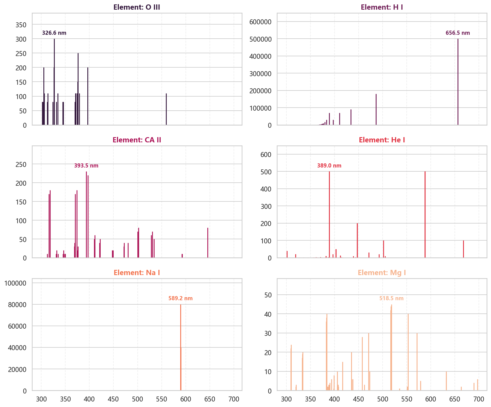

认识#
import numpy as np
import pandas as pd
import matplotlib.pyplot as plt
import seaborn as sns
from astroquery.nist import Nist
import astropy.units as u
fonts = ['Microsoft YaHei', 'SimHei', 'SimSun', 'sans-serif']
plt.rcParams['font.sans-serif'] = fonts
sns.set_theme(style="whitegrid", font=fonts)
# 设置全局高清显示（放在代码最前面）
plt.rcParams['figure.dpi'] = 150 # 屏幕显示清晰度
plt.rcParams['savefig.dpi'] = 300 # 保存图片的清晰度
物质波长#
以氢原子为例， 我们可以看看在300到700nm波段中，他的一些波长
table = Nist.query(300 * u.nm, 1500 * u.nm, linename="H I")
observed实验室实际测得波长Ritz理论波长Rel.相对光强。波长概率
print(table.colnames)
['Observed', 'Ritz', 'Transition', 'Rel.', 'Aki', 'fik', 'Acc.', 'Ei Ek', 'Lower level', 'Upper level', 'gi gk', 'Type', 'TP', 'Line']
def get_element_data(element_name="H I"):
""" 获取物质的波长和光强. 300-700nm """
table = Nist.query(300 * u.nm, 700 * u.nm, linename=element_name)
df = table.to_pandas()
result_df = pd.DataFrame()
result_df['Wavelength'] = df['Observed'].fillna(df['Ritz'])
def clean_rel(val):
s = str(val).strip()
nums = "".join([c for c in s if c.isdigit() or c == '.'])
try:
return float(nums) if nums else 0.0
except:
return 0.0
result_df['Intensity'] = df['Rel.'].apply(clean_rel)
result_df['Element'] = element_name
return result_df
elements = ['O III', 'H I', 'CA II', 'He I', 'Na I', 'Mg I']
dfs = [get_element_data(ele) for ele in elements]
df = pd.concat(dfs)
colors = sns.color_palette("rocket", len(elements))
fig, axes = plt.subplots(3, 2, figsize=(12, 10), sharex=True)
axes_flat = axes.flatten()
for i, name in enumerate(elements):
ax = axes_flat[i]
subset = df[df['Element'] == name]
# 1. 绘制谱线
ax.vlines(subset['Wavelength'], 0, subset['Intensity'],
colors=colors[i], linewidth=1.5)
# 2. 找到最强峰值并标注 (Peak Picking)
if not subset.empty:
# 获取最强线的数据点
peak = subset.loc[subset['Intensity'].idxmax()]
peak_w = peak['Wavelength']
peak_i = peak['Intensity']
# 在峰值上方添加文字标注
ax.annotate(f'{peak_w:.1f} nm',
xy=(peak_w, peak_i),
xytext=(0, 5), # 向上偏移 5 个点
textcoords='offset points',
ha='center', # 水平居中
va='bottom', # 垂直底部对齐
fontsize=9,
fontweight='bold',
color=colors[i])
# 3. 样式设置
ax.set_title(f"Element: {name}", fontsize=12, color=colors[i], fontweight='bold')
ax.set_ylim(0, subset['Intensity'].max() * 1.3) # 增加高度比例(1.3)给文字留空间
ax.grid(axis='x', linestyle='--', alpha=0.3)
plt.tight_layout()
plt.show()
